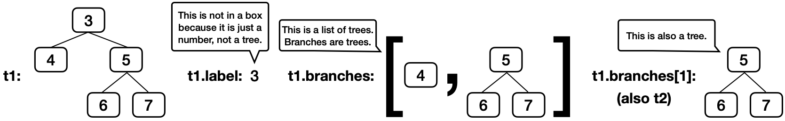

Discussion 9: Trees
Trees
For a Tree instance t:
- Its root label can be any value, and
t.labelevaluates to it. - Its branches are all
Treeinstances, andt.branchesevaluates to a list of branches, which is a list ofTreeinstances. - It is called a leaf if it has no branches, and
t.is_leaf()returns whethertis a leaf. - A new
Treewith the same root label and branches can be constructed withTree(t.label, t.branches).
Here's an example tree t1, for which its branch t1.branches[1] is t2.
t2 = Tree(5, [Tree(6), Tree(7)])
t1 = Tree(3, [Tree(4), t2])
A path is a sequence of nodes in which each is the parent of the next.
You don't need to know how the Tree class is implemented in
order to use it correctly, but here is the implementation from lecture.
class Tree:
"""A tree is a label and a list of branches."""
def __init__(self, label, branches=[]):
self.label = label
for branch in branches:
assert isinstance(branch, Tree)
self.branches = list(branches)
def is_leaf(self):
return not self.branches
# The rest of the class just determines how trees are displayed.
def __repr__(self):
if self.branches:
branch_str = ', ' + repr(self.branches)
else:
branch_str = ''
return 'Tree({0}{1})'.format(repr(self.label), branch_str)
def __str__(self):
return '\n'.join(self.indented())
def indented(self):
lines = []
for b in self.branches:
for line in b.indented():
lines.append(' ' + line)
return [str(self.label)] + linesQ1: Min Tree
What value is bound to result?
get_label = lambda t: t.label
result = min(max([t1, t2], key=get_label).branches, key=get_label).labelHere's a quick refresher on how key functions work with max and min,
max(s, key=f) returns the item x in s for which f(x) is largest.
>>> s = [-3, -5, -4, -1, -2]
>>> max(s)
-1
>>> max(s, key=abs)
-5
>>> max([abs(x) for x in s])
5Therefore, max([t1, t2], key=get_label) returns the tree with the largest label,
in this case t2.
Q2: Has Path
Implement has_path, which takes a Tree instance t and a list p. It returns whether
there is a path from the root of t with labels p. For example, t1 has a
path from its root with labels [3, 5, 6] but not [3, 4, 6] or [5, 6].
Important: Before trying to implement this function, discuss these questions from lecture about the recursive call of a tree processing function:
- What recursive calls will you make?
- What type of values do they return?
- What do the possible return values mean?
- How can you use those return values to complete your implementation?
If you get stuck, you can view our answers to these questions by clicking the hint button below, but please don't do that until your whole group agrees.
As you usual, you will call has_path on each branch b. You'll make this
call after comparing p[0] to t.label, and so the second argument to
has_path will be the rest of p: has_path(b, p[1:]).
What type of values do they return?
has_path always returns a bool value: True or False.
What do the possible return values mean?
If has_path(b, p[1:]) returns True, then there is a path through branch b
for which p[1:] are the node labels.
How can you use those return values to complete your implementation?
If you have already checked that t.label is equal to p[0], then a True
return value means there is a path through t with labels p using that branch
b. A False value means there is no path through that branch, but there
might be path through a different branch.
If your group needs some guidance, you can click on the hints below, but please talk with your group first before reading the hints.
p is a list of length one with the
label of t as its only element. The second base case should check whether the
first element of p matches the label of t.
p[0] is equal to t.label, and so all that's left to check is that p[1:]
contains the labels in a path through one of the branches. One way is with
this template:
for ____:
if ____:
return True
return False